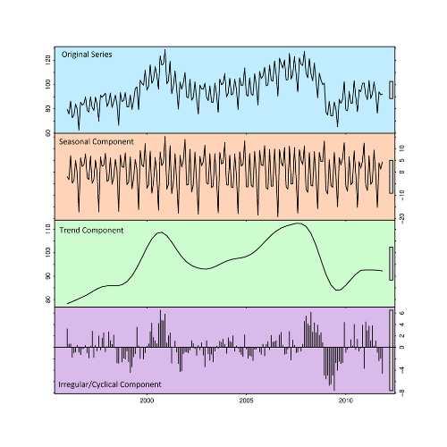

O projeto consistiu no desenvolvimento e na implementação de um sistema de predição de demanda, utilizando os modelos: ARIMA, Prophet e TSB. O sistema visou prevenir o excedente de produção da industria têxtil. A contratante é capaz de selecionar o modelo adequado, comparar as previsões, identificar inconsistências e tomar medidas para prevenir o excedente de produção.
Ao contrário dos modelos mais simples, este projeto utiliza uma arquitetura baseada em ensemble. Isto permite que para cada série temporal, o modelo ideal seja selecionado, direcionando a predição para um resultado mais acurável, tornando a abordagem adaptável a novos cenários, como escassez e adversidades contextuais no mercado e no mundo.
